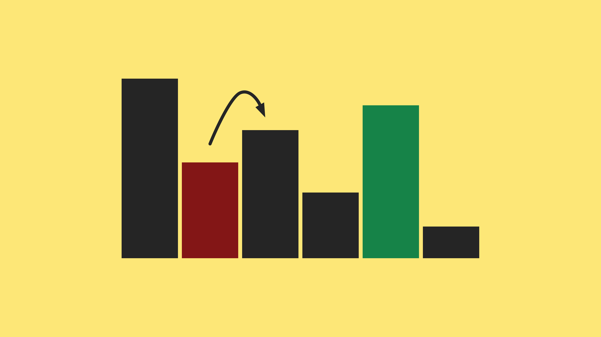

{kind=link}
University of Alberta, Edmonton, Alberta
Thesis: Effective Transfer Learning with the Use of Distance Metrics
Supervisor: Dr. Matthew Taylor
GPA: 3.9/4
I got My BSc in Software Engineering from the University of Isfahan with an outstanding performance
among my classmates for which I was awarded the honorary admission to MSc in AI. I have past
experience in Computer Vision, Robotics, Data Mining and Natural Language Processing. Currently,
my main interest is in the field of Reinforcement Learning and I am working in this area under
the supervision of Professor Matthew Taylor in the RLAI lab.
Education
Msc in Computer Science
BSc in Computer Engineering (Software Engineering)
Diploma in Mathematics and Physics
2019 - 2021
BSc in Computer Engineering (Software Engineering)
2013 - 2017
University of Isfahan, Isfahan, Iran
Thesis: Facial Expression Recognition
Adviser: Dr. Amirhassan Monadjemi
Last 60 credits GPA: 18/20 = 3.83/4
Thesis: Facial Expression Recognition
Adviser: Dr. Amirhassan Monadjemi
Last 60 credits GPA: 18/20 = 3.83/4
Diploma in Mathematics and Physics
2009 - 2013
Farzanegan Amin High School, Isfahan, Iran
GPA: 4/4
GPA: 4/4
Work Experience
Jan 2020-Jun 2021
Reasrch Scientist Intern at Delphi Technology Corp, Calgary, Canada
- Fine-tuning the reward function and training an agent to perform straight and level and climb
tasks in the X-plane flight simulator. - Analyzing (OCR,..) data of a real pilot’s flight, showing that the trained agent achieves
comparable results to a pilot - Software developer
- Technologies: Tensorflow, openAI-gym, OpenCV, Seaborn
Aug 2018-May 2018
Data Scientist at Sadra Eye Clinic, Isfahan, Iran
- Worked on data mining and predictive analysis for Retinopathy of Prematurity
on a real world dataset of over 18000 records. - Using bagging methods(Random Forest) to tackle the problem of small dataset size and achieving 84% accuracy.
- Technologies: Matplotlib, scikit-learn
2016-2017
Backend Developer at ITOrbit, Tehran, Iran
- Working with JAVAEE, C++ and MYSQL to develop an ERP(Enterprise resource planning)
system named 'NAAD' for managing university students and professors information. NAAD was
the most famous and only ERP in academia in Iran and is used in nearly 1 out of 4 universities
across the country. - Database developer
- Software developer
- Writing a program to clean, compress & encrypt text files to increase security
- Working with TortoiseSVN and helping the IT support team to migrate from it to Git.
- Working with WampServer and Making refreshing a single page possible in it in order
to fasten developing process.
Projects

Sorting Visualization: Visualizing the sorting process of three sort algorithms in a simple project in order to experiment with matplotlib animation, Streamlit and AWS EC2 servers.

Email Network Analysis: Analyzing the internal email communication network between employees of a company(strongly connected components, centers, diameter, radius, etc)

Path Construction Planning: A Python program to determine between which cities a new road should be constructed.

Facial Experiences Recognition: : Determining which of happiness, sadness, disgust/anger, fear/surprise feeling the person in an image is experiencing.

Emojifier: Adding Emojis to text messages can make them more expressive and the goal of this project is to add appropriate emojis to text messages automatically.

Depression Measurement : A program in LISP that can tell the user whether he is suffering from depression or not and if he is by how much. If the program recognizes that the user is very depressed it will give further advice.

Country Prediction : A program in LISP that asks about the primary attributes like its continent, Colors included in its flag, etc of a country and tells the name of the country.

Forest Cover Type Prediction: : A data mining classification problem. The goal of this project was to train a classifier that is able to classify(predict) the forest cover types for areas which were not included in its training data.

Failed Servers Detection : Using Gaussian distribution for anomaly detection in order to detect servers with unnatural behaviors in a network.

Artificial Ant with GP:I wrote the code for solving this problem and visualized the of finding the best path. You can see its video on the project's page.

Car detection with YOLO : A program with Keras and Tensorflow and the powerful YOLO model for detecting cars. Car detection can have applications in areas such as Autonomous driving.

Sudoku Solver : Solving 4x4 and 9x9 Sudoku using AI algorithms such as backtracking.
Research Experiences
Research Assistant, University of Alberta
Supervisor: Prof. MAtthew Taylor
- Working on improving transfer learning (regarding final performance, jumpstart, time to threshold)
with the use of distance metrics (action distance, next-state distance, reward distance)
in OpenAIgym environments: PEndulum and Hopper.
2020 – Present - Creating new source tasks for transfer learning based on the distance metrics and comparing them.
Research Assistant, University of Isfahan
Supervisor: Prof. AmirHassan Monadjemi
- Working on video action recognition (using spatial & temporal stream CNNs)
2017 – Present
- Working on data mining and predictive analysis for Retinopathy of Prematurity
(a type of eye disease) on a dataset of over 18000 records2017 – Present - Working on autonomous robot movement with video analysis
2015
Publications
- Machine Learning and the Use of Classifier Algorithms in Identification and Classification
of the Risk for Retinopathy of Prematurity in Premature Infnats2018
Gh.Naderian,Shiva Soleimany,[and 5 others]
- A Note on the Euclidean Algorithm
2018
Shiva Soleimany, K.Bagheri
Published in the Journal of Mathematics and System Science 8 (2018) 175-6
Published in the Journal of Mathematics and System Science 8 (2018) 175-6
- A Note on Acyclic Matchings in Abelian Groups
2018
M.Aliabadi, Shiva Soleimany
Submitted to the Journal of Combinatorial Mathematics and Combinatorial Computing
Submitted to the Journal of Combinatorial Mathematics and Combinatorial Computing
Teaching Experiences
Teaching Assistant, University of Alberta
- Algorithms I
Fall 2019-Winter 2020
- Algorithms II
Fall 2020
- Introduction to Computing
Winter 2021
Teaching Assistant, University of Isfahan
- Data Mining
2016
- Data Structures
2013
- Advanced Programming(JAVA)
2015
- Technical English
2017
Instructor, Farzanegan High School (NODET)
2015-2017
- Mathematics(Algebra, Combinatorics, Geometric Analysis)
- Programming (HTML, C++)
- Mechanical Physics and Astronomy
English Instructor, Iran Language Institute (ILI)
2014-2016
- Teaching English as a Second Language (ESL) to Teenagers.
Honors and Awards
- Received honorary admission from University of Isfahan graduate
studies in
Artificial Intelligence for outstanding academic success, Iran2017 - Top 10 percent during Bachelor studies
2017
- First team in the ACM contest held at the University of Isfahan
2016
- Third place in Isfahan Startup Weekend, Isfahan,Iran
2015
- Ranked top 0.007 in the Nationwide University Entrance Exam among all
students in mathematics and physics (approximately 570,000)2013 - Second place,IranOpen RoboCup Competitions, Junior Soccer Leauge
2012
- Second place,IranOpen RoboCup Competitions, Junior Soccer Leauge
2011
- Participating in the International Robotic competitions, Istanbul, Turkey
2011
- Participated in AUTCUP RoboCup Competitions, Line Follower League
2010
{kind=link}
Certificates
- Machine Learning by the Stanford University on Coursera
- Machine Learning for Data Science and Analytics by ColumbiaX on edX
- Introduction to Graph Theory by the University of California San Diego on Coursera
- Neural Networks and Deep Learning by Deeplearning.ai on Coursera
- Sequence Models by Deeplearning.ai on Coursera
- Convolutional Neural Networks by Deeplearning.ai on Coursera
Technical Skills
- Programming Languages Java Python PHP Prolog C++ R
- Web Technologies HTML CSS JavaScript JQuery XML Json
- Database systems Microsoft SQL Server MySQL SQLite
- Libraries TensorFlow Keras Scikit-learn NetworkX,
- Software RapidMiner NetBeans Eclipse IntelliJ Visual Paradigm MATLAB AltiumDesigner Proteus Visual Studio
- Microprocessor AVR ARM
- Operating System Windows Linux
- TypeSetting Microsoft Word LATEX